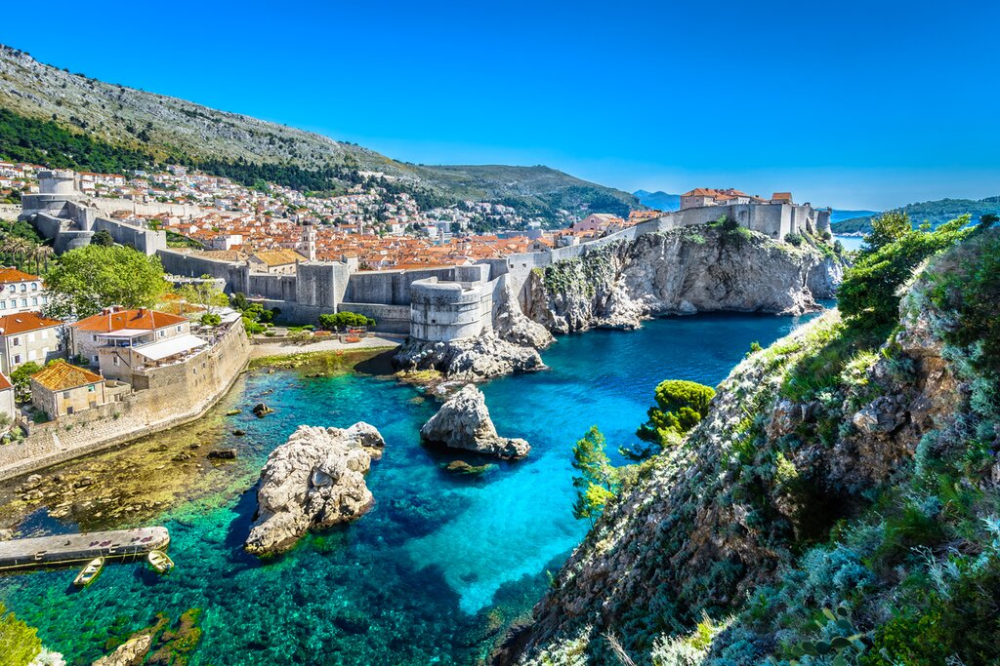

TURISTICKA AGENCIJA
MAMUT
VAM DONOSI NOVE DESTINACIJE ZA LETO 2024

|
Amalfijska obala, Italija
Amalfijska obala je jedan prelep predeo juzno od Napulja koji je suncem obasjan i stvarno pravi uzitak za svakog pravog ljubitelja morske obale. Takodje je prepun sarenih sela na obroncima litica i naravno svetski poznate mediteranske hrane. |
| Francuska rivijera ili Cote d'Azure Svetski je poznata po svojim prelepim plazama, luksuznim smestajima i aktivnim nocnim zivotom. Neke od gradova u ovoj regiji sigurno mozete prepoznati kao sto su Nica, Kan i Sen-Trope. |
 |
|  | Dubrovnik,Hrvatska Jedan od domacih favorita ce vam od sad u Mamutu biti po pristupacnijim cenama. Svi znamo kakvo je iskustvo leti setati starim gradom Dubrovnika ili upijati sunceve zrake na hrvatskoj svetski poznatoj obali. Takodje nam je svima poznato gostoprimstvo ovog prelepog svetskog ali i mediteranskog grada. |